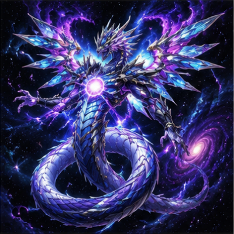
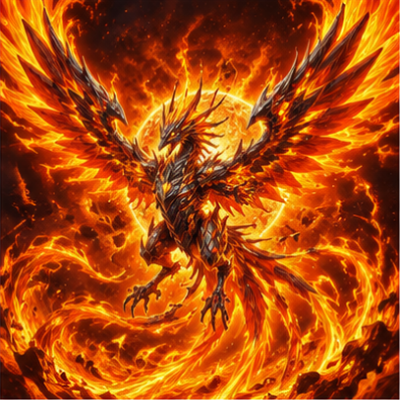

-
Cosmos Sentinel
O Guardião das Estrelas Eternas

Este imponente guerreiro cibernético é a personificação da harmonia entre a tecnologia avançada e energia cósmica. Empunhando o Cetro Estelar, Cosmos Sentinel pode manipular o espaço-tempo, anulando ataques e fortalecendo aliados.
ATK/ 2800 DEF/ 2500 -
Nebuladragon
O Dragão das Nebulosas Infinitas

Nascido no coração de uma nebulosa ancestral, Nebuladragon controla gravidade, poeira estelar e explosões cósmicas. Suas asas distorcem o espaço, tornando seus ataques devastadores e imprevisíveis.
ATK/ 3000 DEF/ 2500 -
Phoenixflare
A Fênix das Chamas Eternas

Uma ave lendária envolta por chamas eternas que renasce sempre que é derrotada. Seu fogo sagrado purifica as trevas e inspira coragem em todos os seus aliados.
ATK/ 2800 DEF/ 2000 -
Glacial Knight
O Cavaleiro do Inverno Eterno

Um cavaleiro forjado em gelo mágico que domina o frio absoluto. Sua espada congela qualquer adversário, enquanto sua armadura cristalina resiste aos ataques mais poderosos.
ATK/ 2600 DEF/ 2200 -
Void Overlord
O Senhor do Vazio Absoluto

Soberano do Vazio Absoluto, Void Overlord absorve energia vital e envolve seus inimigos em uma escuridão sem fim. Sua presença faz até a luz desaparecer.
ATK/ 3200 DEF/ 2800 -
Cyber Dragon Nova
A Máquina da Evolução Suprema

Um dragão cibernético criado com tecnologia alienígena capaz de evoluir durante a batalha. Seus canhões de plasma e velocidade extrema o tornam um adversário letal.
ATK/ 2900 DEF/ 1600 -
Verdant Guardian
O Protetor da Floresta Ancestral

Guardião ancestral das florestas sagradas, controla raízes, árvores e espíritos da natureza. Sua força aumenta conforme a vida ao seu redor floresce.
ATK/ 2400 DEF/ 3000